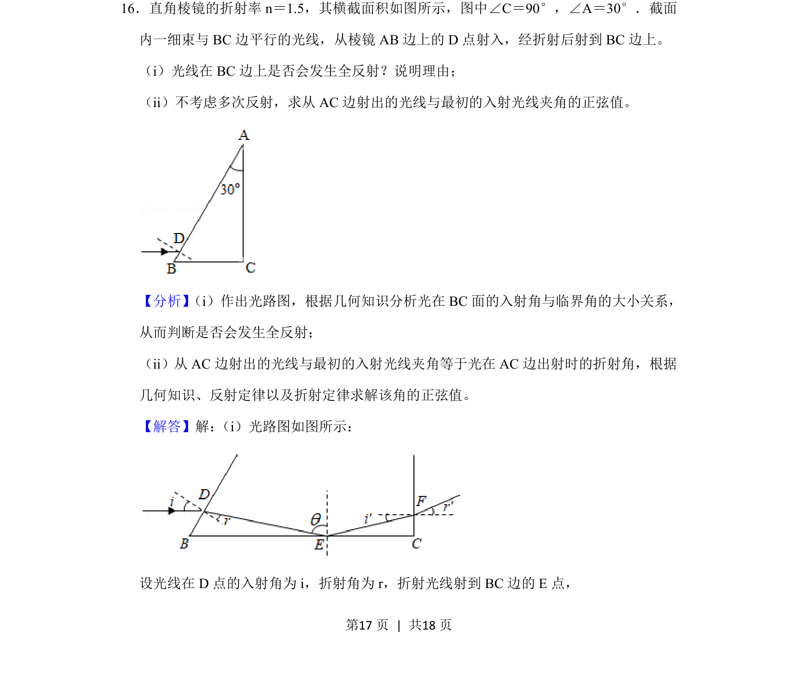
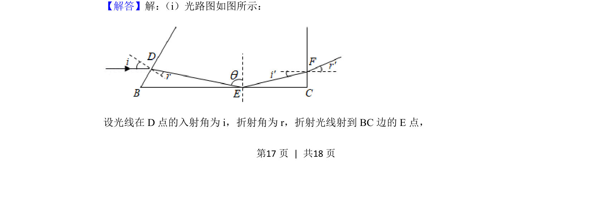
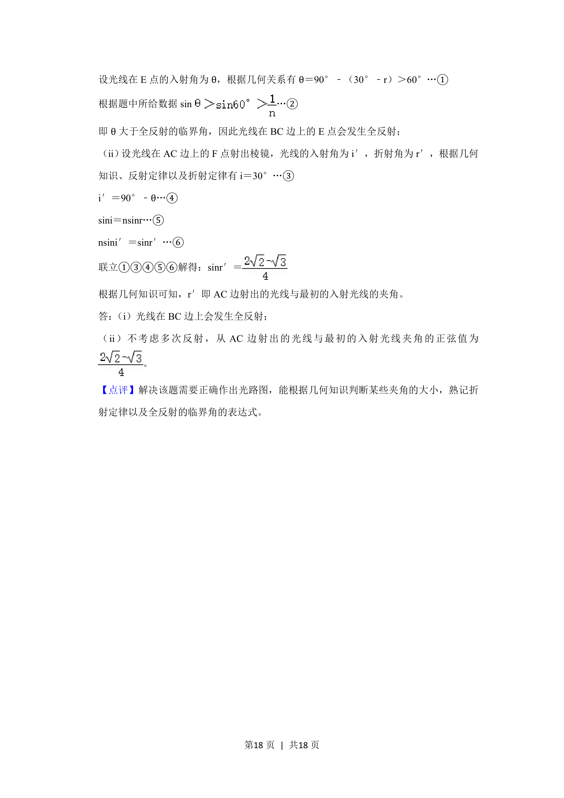

考点：折射定律 全反射临界角 几何角度关系 正弦定理
折射定律
全反射临界角
几何角度关系
正弦定理

光线折射与全反射判断，结合几何关系求解出射光线与入射光线夹角的正弦值


📄 原 PDF 第 17 页：素材/真题/吉林/2008-2024·（吉林）物理高考真题/2020年高考物理试卷（新课标Ⅱ）（解析卷）.pdf
素材/真题/吉林/2008-2024·（吉林）物理高考真题/2020年高考物理试卷（新课标Ⅱ）（解析卷）.pdf